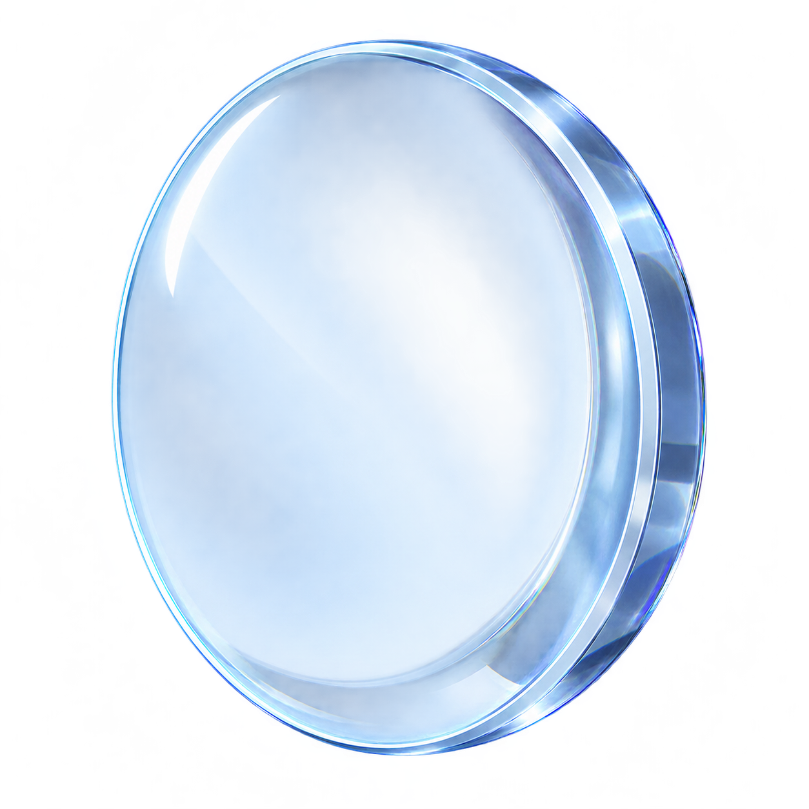

<!doctype html><html lang="zh-CN"><meta charset="utf-8"><link rel="stylesheet" href="../../shared/typography/typography.css"><title>组件独立预览</title><link rel="stylesheet" href="../../shared/components/components.css"><link rel="stylesheet" href="debug-panel.css"><link rel="stylesheet" href="../../shared/components/operation-tip.css"><link rel="stylesheet" href="../../shared/components/stage-completion.css"><style>
*{box-sizing:border-box}[hidden]{display:none!important}body{margin:0;width:1920px;height:888px;overflow:hidden;color:#e7effa;font:16px 'Segoe UI','Microsoft YaHei',sans-serif;background:#152946 url('../../experiments/newton-telescope/assets/rail-lab/background-stationery-v2.png') center/cover}body::before{content:'';position:absolute;inset:0;background:#0e213bc9;z-index:-1}header{padding:44px 80px}h1{font-size:36px;margin:0 0 14px;font-weight:500}p{color:#adbfda}.stage{position:absolute;left:250px;top:240px;width:1420px;height:380px;display:flex;justify-content:center;align-items:center;gap:320px;border:1px solid #7c9bc447;border-radius:24px;background:#152b45a8}.object{position:relative;border:0;background:none;padding:0;cursor:pointer}.object img{display:block;width:220px;height:240px;object-fit:contain}.target{width:200px;height:200px;border:2px solid #9bbedd77;border-radius:50%;display:grid;place-items:center;color:#b6cee6;background:#91b8d40b}.actions{position:absolute;bottom:78px;width:100%;display:flex;justify-content:center;align-items:center;gap:18px}.actions button{font:inherit;border:1px solid #7693ba80;border-radius:10px;background:#294260;color:#e1edfa;padding:14px 26px;cursor:pointer}.actions output{color:#c6d8ea}.hint-debug-trigger{bottom:24px}button:focus-visible{outline:2px solid #f5cb82;outline-offset:4px}
</style><header><h1 id="title"></h1><p id="description"></p></header><section class="stage" id="stage"><button class="object" id="object" aria-label="凹面镜"></button><div class="target" id="target">目标位置</div></section><div class="actions" id="actions"></div><script src="../../shared/components/hand-icons-flat.js"></script><script src="../../shared/components/gesture.js"></script><script src="../../shared/components/name-bubble.js"></script><script src="../../shared/components/affordance.js"></script><script src="mirror-contours.js"></script><script src="debug-panel.js"></script><script src="../../shared/components/operation-tip.js"></script><script src="../../shared/components/stage-completion.js"></script><script src="component.js"></script></html>
